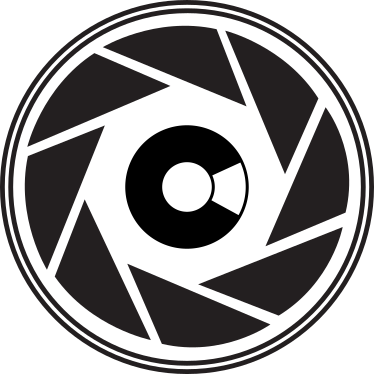
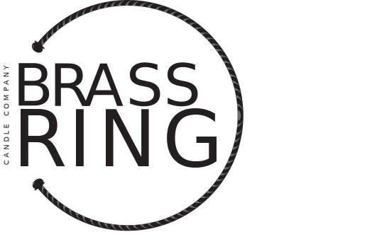

About Jay Vernon
General Information
Hello! This site is about Jay Vernon, to provide you with a little more information on me. To start, I'm originally from Winnipeg, Manitoba. Moved to Ontario at a young age and have lived here since then. I grew up playing a high level of Hockey and Baseball, but slowly trasitioned my way out of them. I decided to attend Fanshawe College for Graphic design, but quickly moved on, as I'm not a fan of the foundations for it (mostly done by hand). I found the Interactive Media Design program and achieved Dean's Honours in my first term. I now play on a competitive Overwatch Esports team, and am looking at jobs out of the country for when I graduate. I definitely enjoy the coding in the IDP program. I feel that this is a much better fit for me, as there's more technilogical skills than design skills. To touch some of my design history, check the section below.
Design Background
Here are two of my designs from recent history. Just logo designs, but I feel it will convey an idea for my style of design. The First logo is for a company called Camerashy Images. The Second logo is for a company called Brass Ring Candle Company.
 